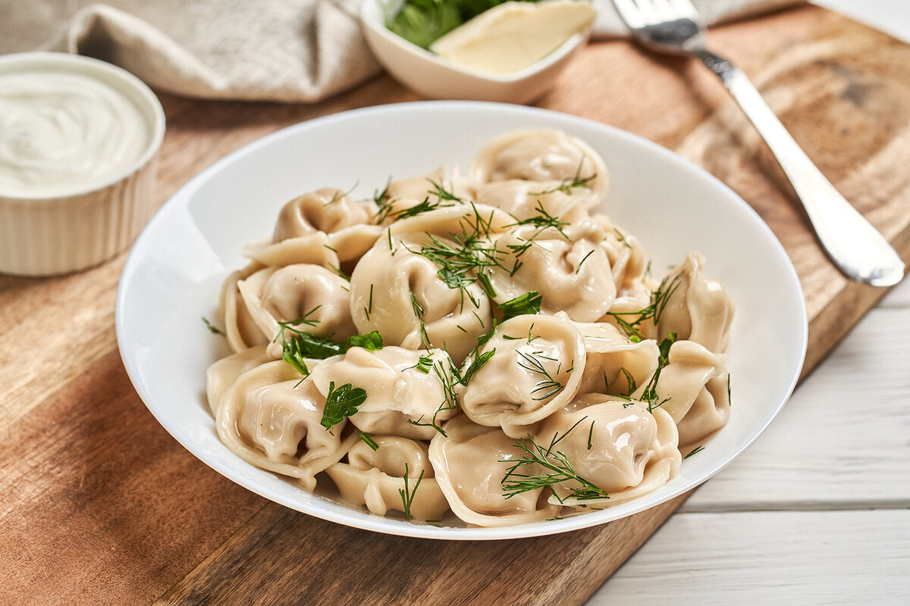

Пельмени
Пельмени — это традиционное русское блюдо, представляющее собой небольшие кулёчки, обвёрнутые в тесто и обычно наполненные мясной начинкой. Это одно из самых популярных блюд, которое часто готовят на праздники и семейные ужины.
Описание блюда
Пельмени являются настоящей кулинарной традицией, распространившейся в России и других странах Восточной Европы. Они готовятся из тонкого теста, в которое завернута мясная начинка (чаще всего говядина, свинина или курица). Пельмени могут быть как варёными, так и жареными, и часто подаются с различными соусами, такими как сметана, уксус или горчица.
Рецепт пельменей
Вот простой рецепт для замороженных пельменей:
- Достаём замороженные пельмени.
- Варим пельмени в кипящей воде до готовности (примерно 5-7 минут после того, как они всплывут).
- Подаём с соусом по вкусу.